Префектура Хёго · Мики · ремёсла
Мики, город кузнецов: ножи «Мисудзу», сковороды millio и клинки amenoma
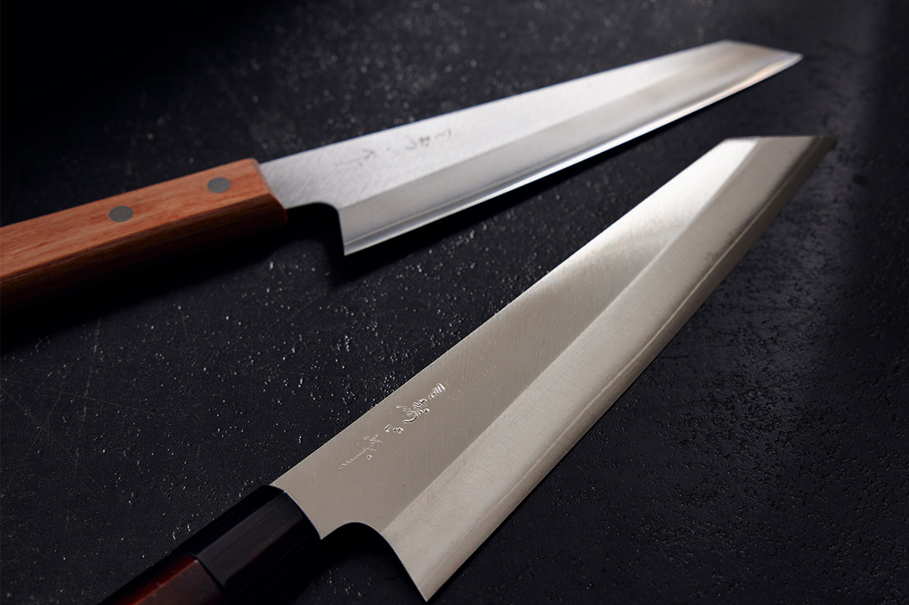
Мики, небольшой город в префектуре Хёго, считается старейшим городом кузнецов в Японии: местной кузнечной традиции около 1500 лет. Здесь и сегодня куют кухонные ножи, сковороды и походные клинки, за которыми охотятся повара и любители кемпинга.
Город
Полторы тысячи лет у горна
Мики лежит в центре южной части префектуры Хёго. Город вырос вокруг замка Мики на реке Миногава, одного из трёх главных замков Харимы, как называли в старину запад нынешней префектуры. С эпохи Эдо (1603–1868) здесь всё больше занимались металлическими изделиями, и это ремесло до сих пор остаётся главным делом города. Японцы так и называют местную продукцию: «металл Мики».
У «металла Мики» есть свой символ, «Канамоно-васи», орёл из металлических изделий. Его история началась с беды. В 1932 году, в конце сезона дождей, на город обрушились ливни: прорвало пруды, вышла из берегов Миногава, и Мики сильно пострадал. На следующий год, чтобы поднять дух горожан, у жителей собирали идеи, и среди предложений, как рассказывают, был большой орёл, собранный из местных металлических изделий.
Прошло двадцать лет. В 1952 году на ярмарке металлических изделий Мики, которая сегодня называется «Канамоно мацури», по мотивам той старой модели появился первый орёл. Придумал его Синдзи Судзуки, основатель мастерской «Мисудзу хамоно сэйсакусё». Готовая птица была так красива, что зрители ахали.
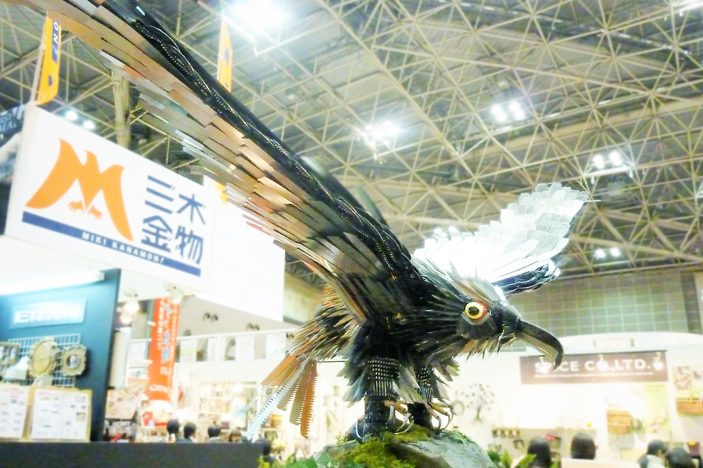
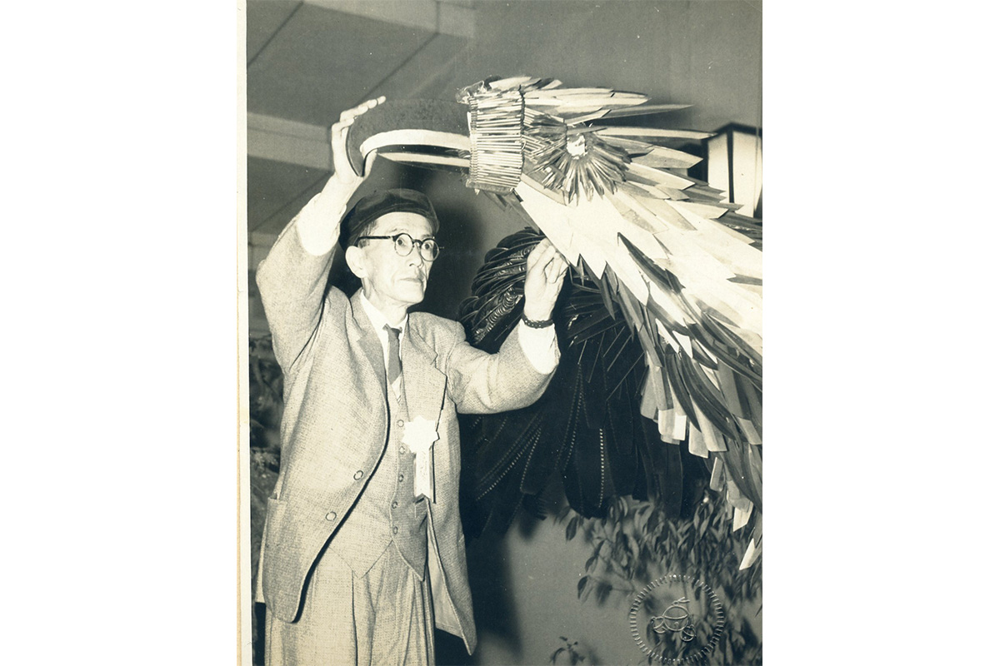
В 1967 году орла осматривали император Сёва и императрица, потом его возили на выставки за границу: на национальную выставку скобяных товаров в Нью-Йорке и на международную ярмарку инструментов в Кёльне. Птица с раскрытыми крыльями, готовая сорваться со скалы, помогла городу стряхнуть послевоенное уныние и выйти не только на японский, но и на мировой рынок. Орёл и сегодня остаётся гордостью Мики.
Мисудзу
Нож, который режет и не ржавеет
Мастерскую «Мисудзу» Синдзи Судзуки открыл сразу после войны. До этого он держал красильню, где окрашивали ткани в киотском стиле, и решиться на перемену помогло само место: вокруг был город кузнецов. С тех пор три поколения мастеров делают вручную самые разные ножи, от очень твёрдых клинков высшего класса для профессиональных поваров до универсальных ножей для домашней кухни.
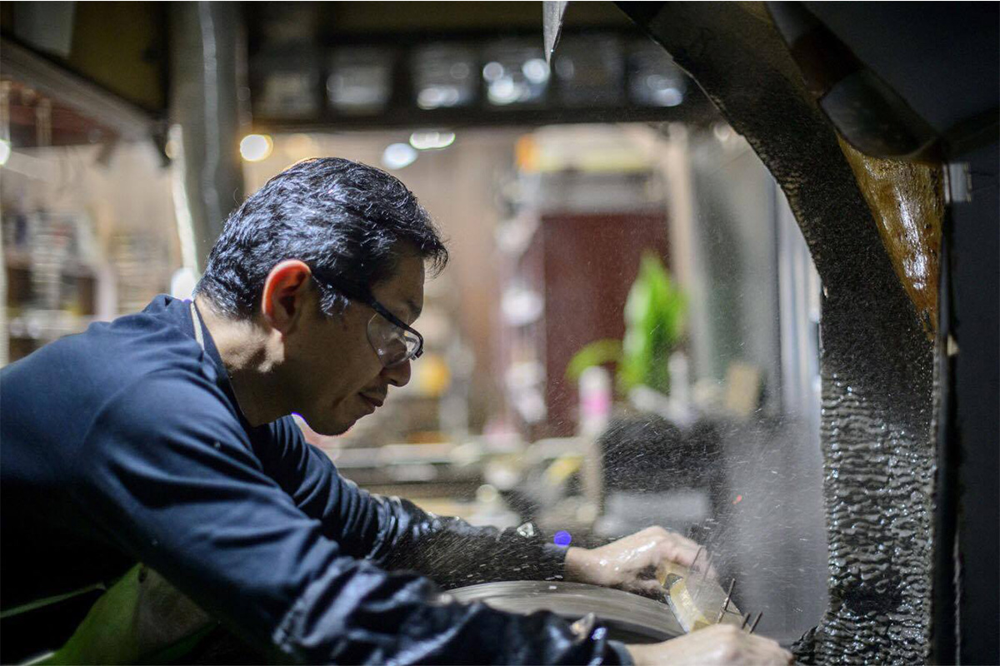
Вторая причина перемены была в новом материале. Японский нож тогда делали так: кузнец сваривал твёрдую режущую сталь с мягким железом. Сталь держит заточку, железо даёт гибкость, и такой нож долго остаётся острым и не ломается. Но весь клинок легко ржавеет, и по удобству в обращении он проигрывал иностранным ножам целиком из нержавейки.
После войны появилась технология, позволявшая соединить нержавеющую сталь с режущей. Синдзи Судзуки первым в Японии взял для кухонного ножа материал, где слой режущей стали зажат между двумя слоями нержавейки. Нож, у которого есть и стойкость к ржавчине, и острота хорошей стали, по тем временам был смелой идеей. Так в 1946 году появился «Нож Мисудзу» с прослойкой стали внутри нержавеющей обкладки.
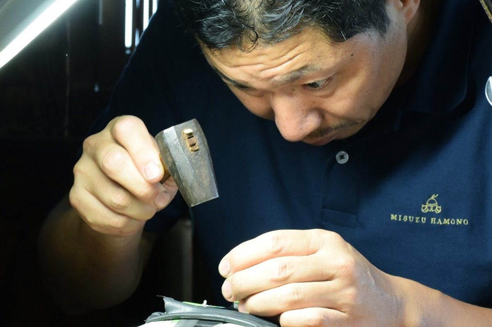
Форму ножей здесь продумывают так же тщательно, как сталь. Мастерская исходит из того, что нож не должен утомлять руку, поэтому фирменную форму «Мисудзу-гата» рассчитывали под любые кухонные задачи.
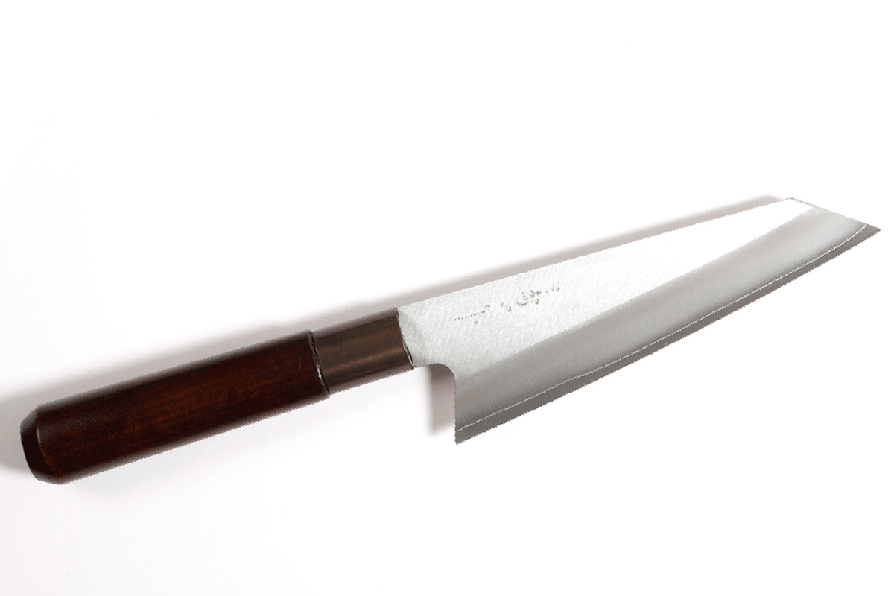
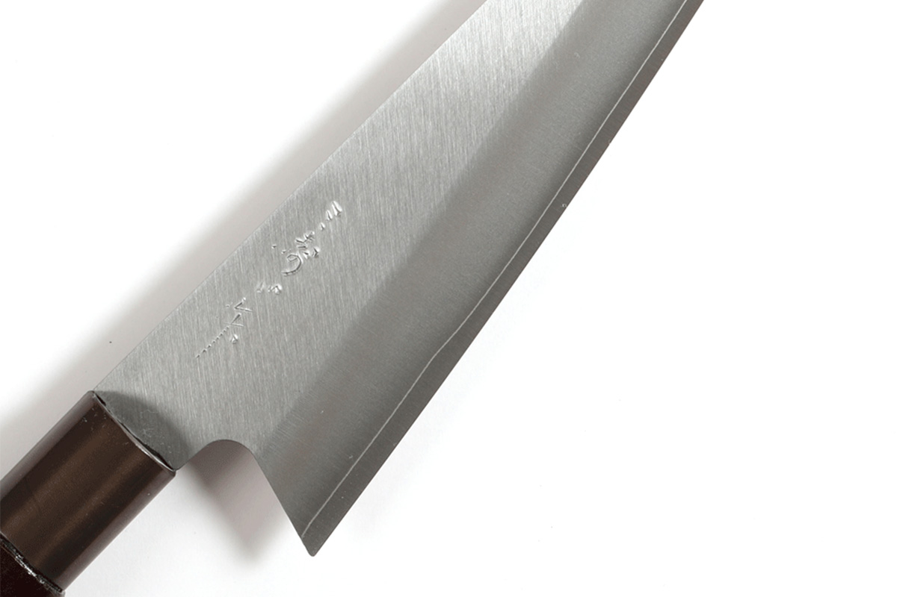
Для профессионального повара нож решает, каким получится блюдо. В «Мисудзу» хотят, чтобы и дома каждый мог готовить с удовольствием своим собственным ножом, поэтому на клинке за отдельную плату гравируют имя.
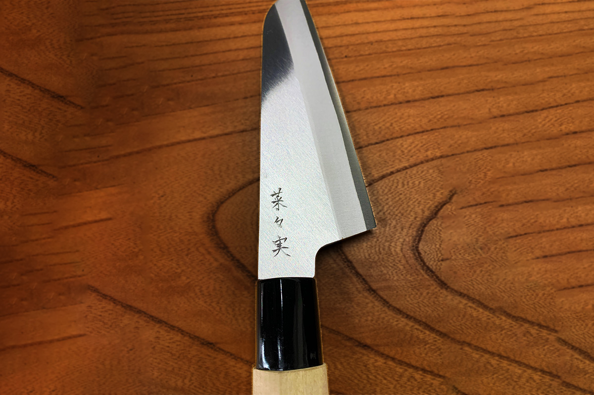
Среди ножей мастерской есть и накири, японский нож для овощей, из многослойной кованой стали. Узор на его клинке напоминает волны на воде.
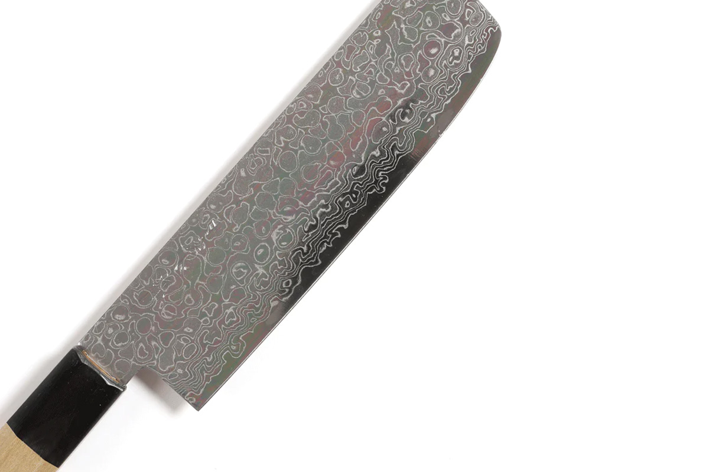
Нож к тому же хороший подарок. В Японии клинок издавна считают вещью на удачу, которая отсекает злое в начале любого дела: клинком перерезают ленту на торжествах и канат при спуске нового корабля на воду, им же разрезают свадебный торт. Именной нож можно подарить на новоселье, на свадьбу или на День матери.
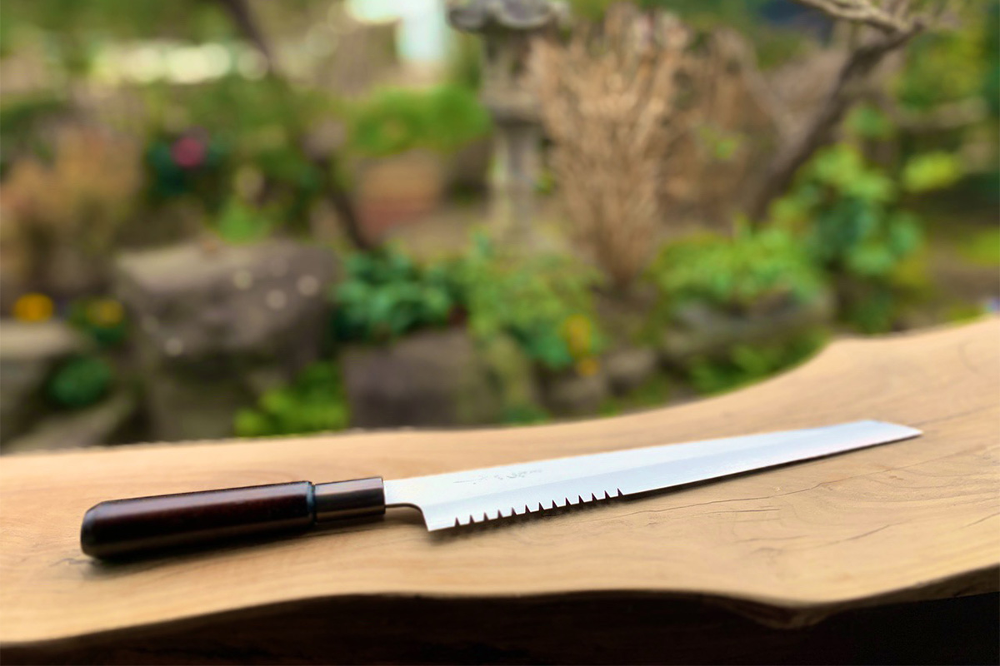
«Когда-то каждый умел сам наточить нож. Сейчас детей от ножей чаще держат подальше, чтобы не порезались. А ведь если привыкать к инструменту с детства, руки становятся ловкими, и это развивает воображение. Хочется, чтобы больше людей узнали, как мы делаем ножи, и пользовались ими как удобным и привычным инструментом»
Ямато Мияваки, третье поколение мастеров «Мисудзу»
Нож, к которому хочется вернуться
Нож «Мисудзу» режет остро и не ржавеет, но с первых дней мастерская думала прежде всего об удобстве. После основателя дело перенял его наследник, второе поколение, а сегодня ножи делает Ямато Мияваки, и этот подход он сохранил.
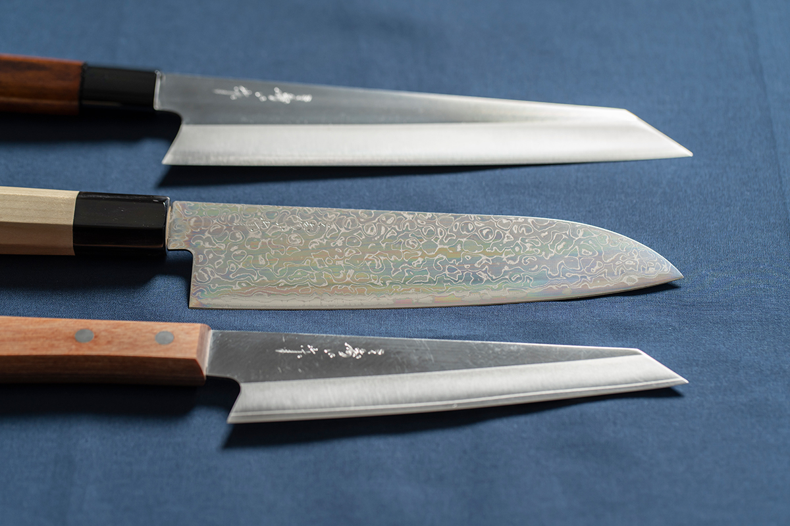
«Возьмём универсальный нож европейской формы. Традиционный дизайн тоже хорош, но, чтобы нож лучше подходил к современной кухне, мы нарочно сделали рукоять с натуральной фактурой. Сталь сделали прочнее, чтобы заточка держалась дольше, а форму подобрали такую, чтобы резать было легко»
Ямато Мияваки
Когда нож не раздражает, им хочется пользоваться каждый день. Почувствовать мастерство старой кузницы лучше всего на собственной разделочной доске.
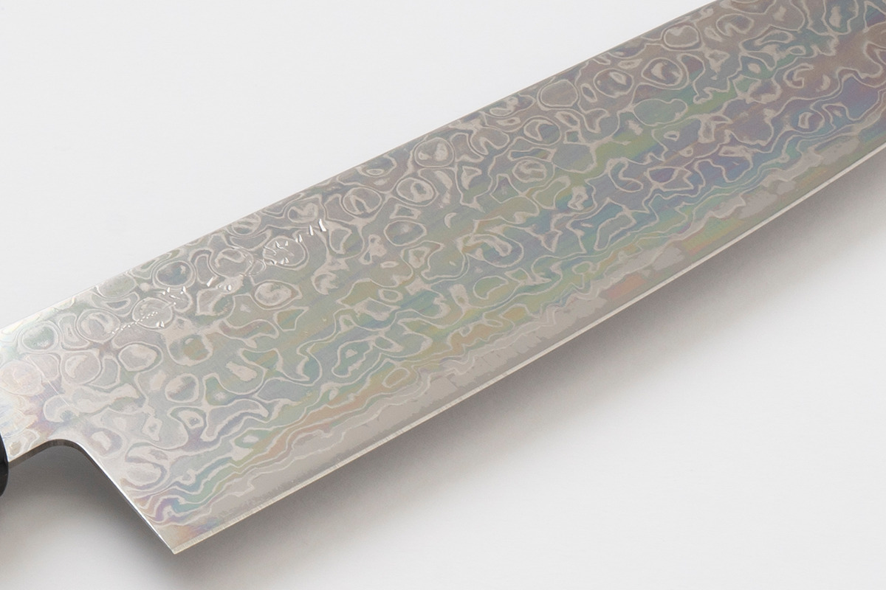
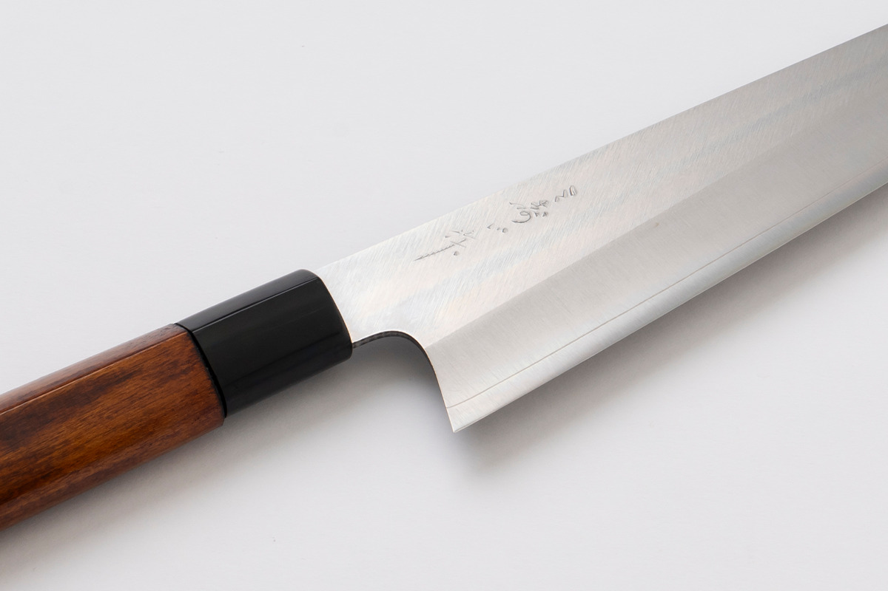
В 2024 году в линейке были, например, три модели. «Мисудзу ё-гата», нож европейской формы, подходит для мяса, рыбы и овощей; он чуть меньше обычного, длина клинка 170 мм, вес 120 г, цена 12 540 иен в 2024 году. У сантоку из многослойной стали на клинке проступает узор, а восьмигранная рукоять из рога буйвола удобно ложится в ладонь: клинок 180 мм, вес 110 г, 16 720 иен в 2024 году. Длинный «Мисудзу-гата» с клинком 210 мм легко разрезает кочан капусты и пекинскую капусту и выручает, когда готовить нужно много или семья большая: вес 120 г, 15 730 иен в 2024 году.
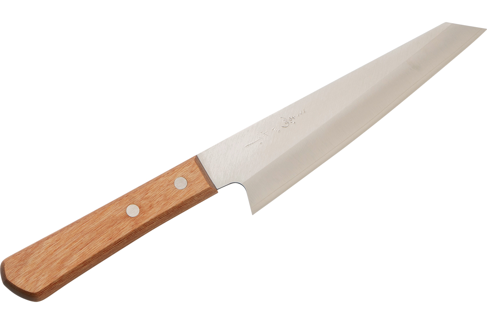
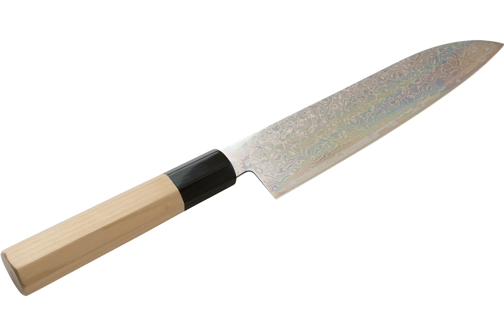
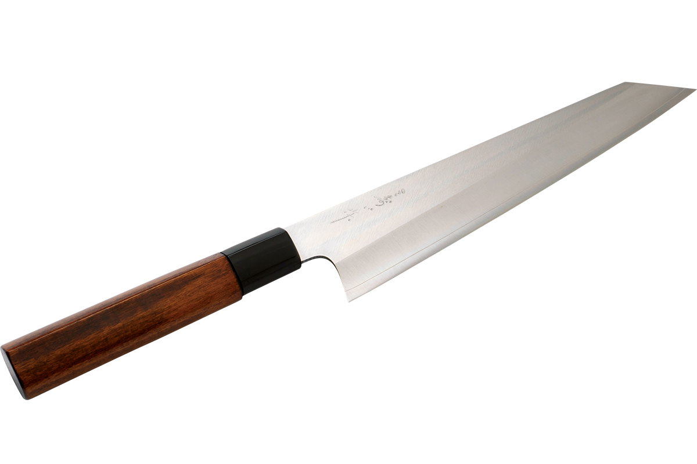
«Мисудзу хамоно сэйсакусё»
- Адрес
- префектура Хёго, Мики, Хоммати, 2-9-36
millio
Сковорода, которую растят годами
millio делает кухонную утварь и предметы интерьера из железа. Бренд принадлежит «Адзуи сэйсакусё», мастерской в Мики, которая делает мотыги. Кузнецы оставляют на металле следы молота и закручивают его, и вещи получаются одновременно прочными, изящными и удобными. К 2024 году в линейке появились и вещи из титана.
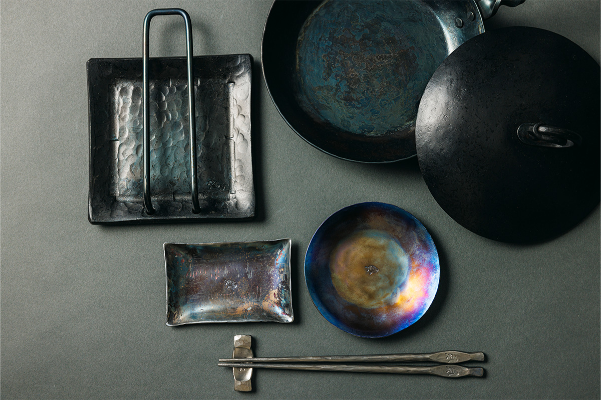
Глава millio сам кузнец и обращается с железом как с пластилином. Технику, на которой держится производство мотыг, семья передаёт из поколения в поколение почти с самого конца войны, и на ней millio делает сковороды и жаровни, в которых чувствуется ручная работа.
«Станков почти не используем. Раскалённое железо просто бьём и бьём, пока не получится форма. Потом закручиваем ручку, наносим на поверхность следы молота, чтобы вещь хорошо смотрелась и в кемпинге»
глава millio
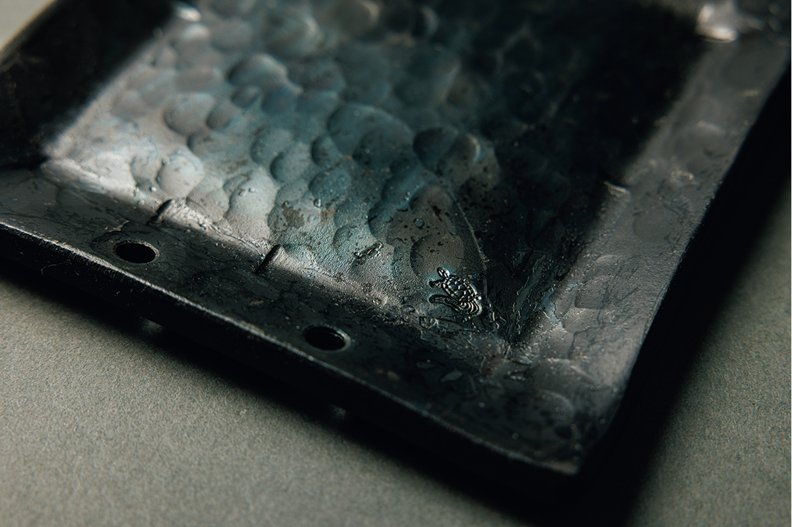
Дело не только в дизайне. Железо хорошо проводит и держит тепло, поэтому продукты запекаются сочными, сохраняя вкус, и любители готовить ценят millio именно за это. Бренд делает и столовые приборы из нержавеющей стали и титана, и с мира millio можно начать с мелочей.
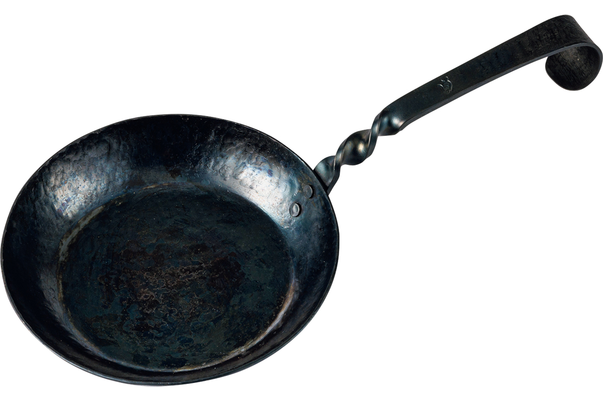
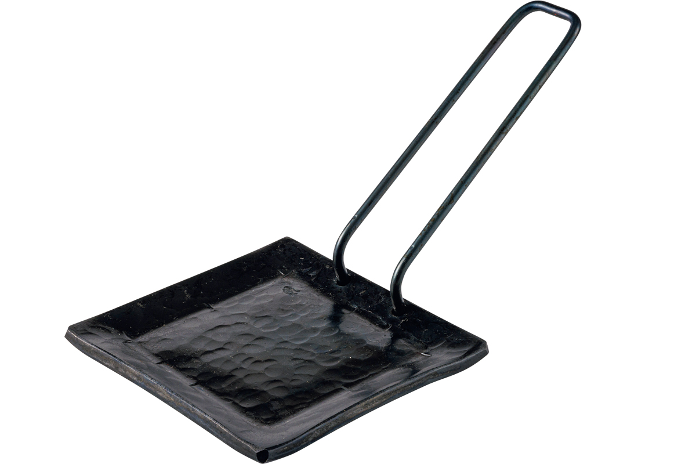
Кованая сковорода диаметром 20 см рассчитана на одного или двух человек: в ней помещается яичница из двух яиц. Закрученная ручка служит украшением, и на природе сковорода выглядит очень красиво. Вес 910 г. Квадратная кованая жаровня толщиной 8 мм по размеру подходит для походной горелки на одну конфорку, 150 на 150 мм, вес 1 470 г. Толстое железо долго держит тепло, и даже толстый кусок мяса снаружи схватывается корочкой, а внутри остаётся сочным. К ней можно докупить кожаный чехол на ручку за 3 000 иен (2024 год), он легко снимается.
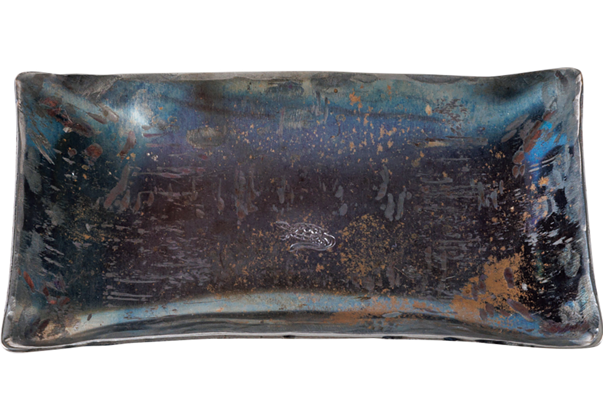
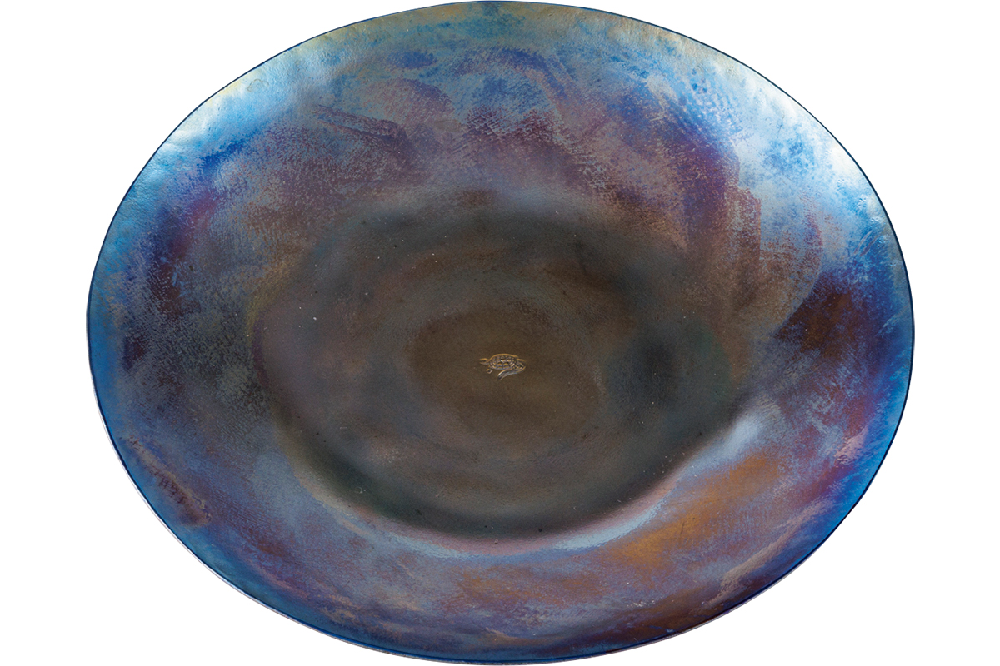
На небольшом прямоугольном блюде из нержавейки нарочно оставлены следы, которые появились при ковке, чтобы было видно ручную работу. Для своего размера, 110 на 73 мм, оно увесистое (95 г), и ветер его не унесёт. Круглая тарелка из титана диаметром 115 мм весит всего 80 г: титан лёгкий, хорошо подавляет бактерии и не ржавеет. Её можно брать под закуски или класть на неё мелочи.
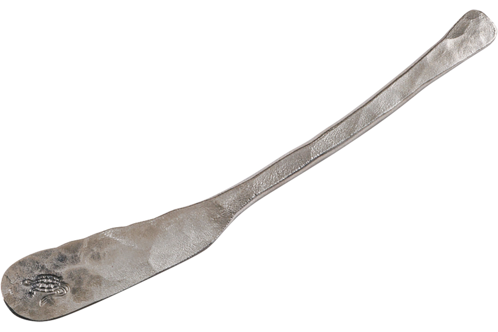
Нож для масла выкован из титанового прутка диаметром 6 мм. Неровная после молота поверхность придаёт ему особую фактуру, а на кончике стоит знак бренда в виде черепахи. Длина 145 мм, вес 15 г.
amenoma
Походный нож, о котором мечтают
Бренд amenoma основали в 2021 году, чтобы поддержать металлические ремёсла Мики и соседнего Оно. Его основатель больше 20 лет проработал в местной металлической отрасли и вместе с кузнецами из этих мест решил дать новую жизнь своему краю. amenoma выпускает ножи разных видов, но начинала с походных.
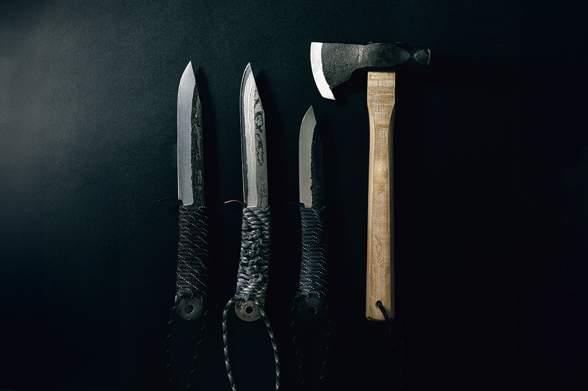
Задумка была такой: использовать прекрасную технику мастеров и при этом сделать то, что действительно хотят покупатели. За три года, к 2024 году, у бренда заметно прибавилось поклонников. Больше всего любят походные ножи. Клинок и хвостовик здесь сделаны одним куском до самого конца рукояти, а рукоять туго обмотана паракордом, и выглядит нож очень надёжно. Лезвие куёт кузнец, и режет оно превосходно. Такой нож будто вышел прямо из фантазий кемперов.
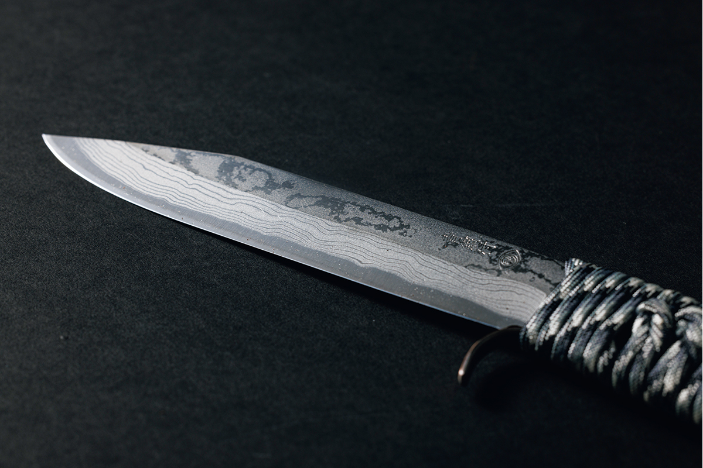
«Я считаю, что удовольствие от своих вещей и есть главный источник сил. Взять любимое снаряжение, уйти на природу и хорошо провести там время. По-моему, из этого и складывается мир на земле»
основатель amenoma
Мастерство, которым гордится Япония, лучше всего проверять на природе.
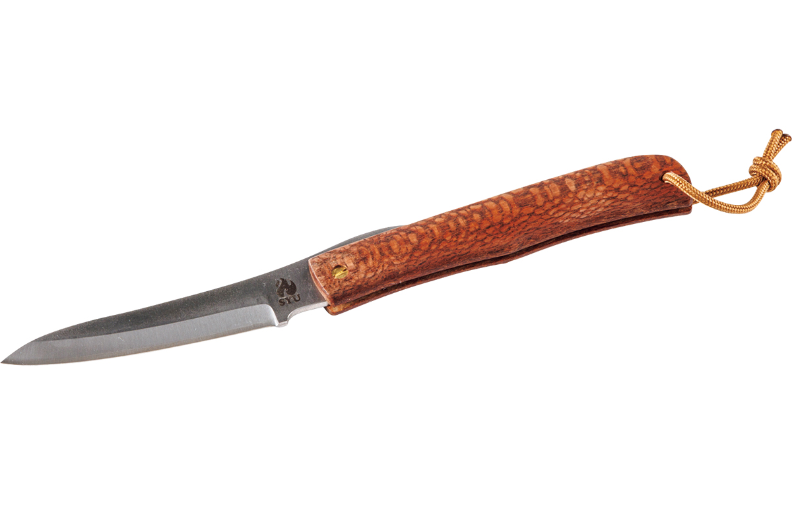
Складной нож Falthen сделан вместе с японским блогером, который снимает видео о кемпинге, и рассчитан на походную кухню: пальцы не бьются о доску, и он легко режет любые продукты. В разложенном виде длина 255 мм, в сложенном 160 мм, вес 100 г.
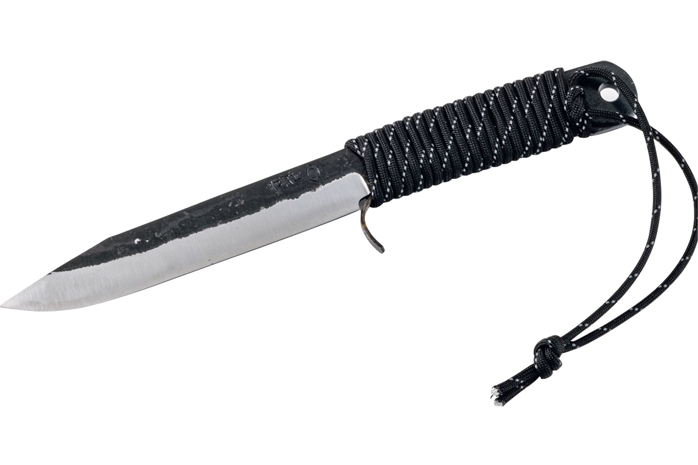
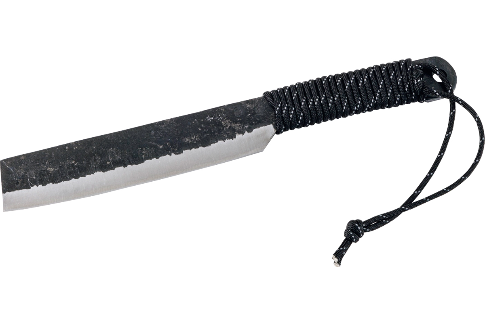
Bushcraft knife 150 годится для всего: колоть дрова, строгать тонкую стружку для растопки, готовить. Рукоять обмотана светоотражающим паракордом, так что нож легко найти и в темноте. Длина 280 мм, вес 320 г. Тесак Bushcraft nata 180 сделан с клинком до самого конца рукояти, поэтому им можно колоть даже твёрдую древесину, подбивая обух поленом. Он прочный, очень острый и рассчитан прежде всего на дрова. Длина 310 мм, вес 470 г.
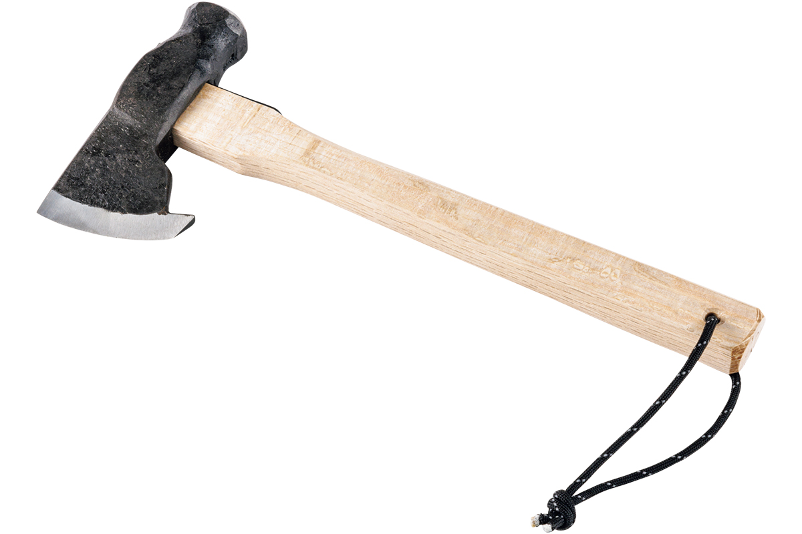
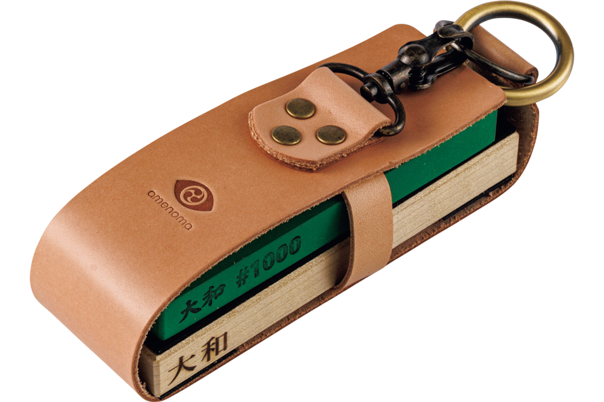
Bushcraft hammer 600 совмещает три дела: колет дрова, забивает колышки палатки и вытаскивает их. Длина всего 30 см, вес 755 г, и такой инструмент всегда пригодится. Набор Knife strop с камнем зернистостью 1000 помещается в компактный кожаный футляр: камень хорошо снимает металл, и наточить можно что угодно, от кухонного ножа до тесака, прямо на месте. Вес вместе с футляром 405 г.
amenoma
- Сайт
- amenoma.jp
Фото: Кадзуя Хаяси, Симпэй Фукадзава.